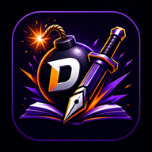

DETONA CONCURSOS Documentos do aplicativoTermos e Privacidade
Informações essenciais sobre o uso do aplicativo e o tratamento de dados da jornada acadêmica.
Termos de Uso
O DETONA CONCURSOS é uma ferramenta educacional de preparação. Resultados, aprovações e classificações dependem do desempenho individual e não são garantidos pelo aplicativo.
A conta é pessoal. O usuário deve manter suas credenciais protegidas e utilizar apenas os cursos aos quais possui acesso válido. Tentativas de contornar autenticação, entitlement ou isolamento de dados podem resultar na suspensão do acesso.
Conteúdos, questões e recursos podem receber correções e atualizações editoriais. Cursos em preparação ou indisponíveis não podem ser adquiridos pelo aplicativo.
Privacidade
Para autenticar e sincronizar a jornada, o aplicativo trata dados da conta, como nome e e-mail, além de progresso acadêmico, respostas, tempo de estudo, revisões e configurações do aluno.
O acesso remoto é separado por usuário e concurso. Informações pessoais de hábitos identificadas como locais permanecem no dispositivo conforme o contrato de privacidade do aplicativo.
O aluno pode solicitar informações ou suporte sobre sua conta pelo canal oficial abaixo. Nunca envie senha, token ou chave administrativa.